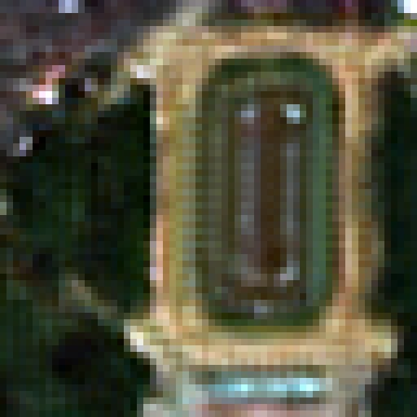
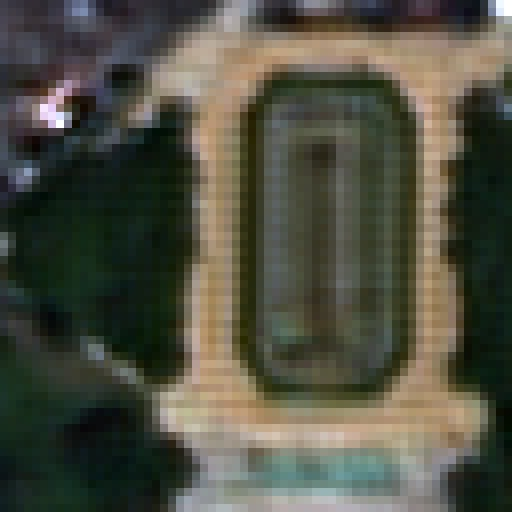

PAN · 흑백 0.8 m
PAN · 흑백 0.8 m


 QB
QB GF2
GF2 WV2
WV2②
주 개선
축척 혼합 학습
원래 크기와 두 배 거친 크기를 함께 보며 배웁니다
- 증상넓게 보는 가지(①)를 붙이자 학습한 위성에서는 PSNR이 0.70 dB 올랐지만, 한 단계 더 거친 시험과 처음 보는 위성에서는 결과가 무너졌습니다.
- 진단학습 없이 가지 출력의 세기만 줄여 보니 거친 시험의 성능이 돌아왔습니다. 원인은 한 축척에 맞춰 세부를 너무 세게 넣도록 배운 것이었습니다.
- 해결같은 패치를 위성처럼 흐려 2배 거친 학습 쌍(32×32)을 하나 더 만들고, 같은 가중치의 모델로 두 쌍을 함께 학습합니다. 거친 쌍의 손실에는 0.25를 곱합니다.
- 결과원본 대비 QB +0.87 · GF2 +2.05 · WV3 +1.01 dB(3시드)로 거친 시험의 약점이 사라졌습니다. 거친 쌍을 빼면 처음 보는 WV2에서 1.3 dB 떨어집니다.
+


없는 링 무늬

무늬 사라짐

WV3로 학습해 WV2 장면 14에 적용, 주황 상자 위치를 확대. 개선이 가장 큰 곳을 고른 예입니다.
 결과 Y
결과 Y 다시 줄인 DY
다시 줄인 DY 입력 MS
입력 MS 어긋난 만큼
어긋난 만큼


 R
R NIR
NIR